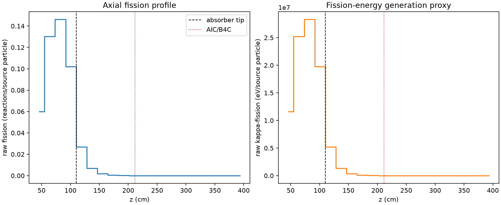
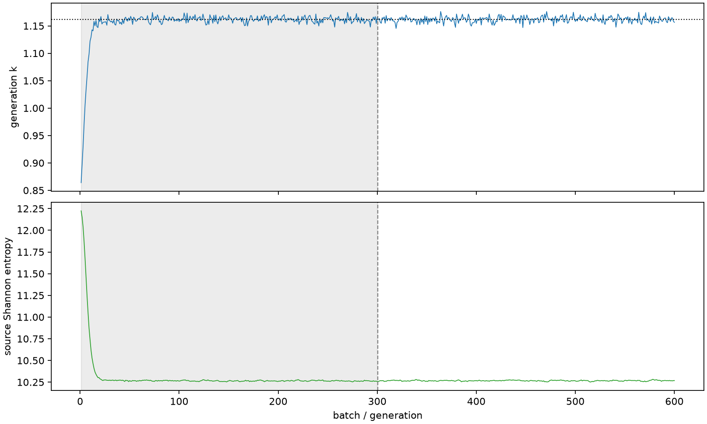

| field | value |
|---|---|
| experiment | V2-STAGE_128_OGRENCI_01-0003 |
| k | 1.1615277222437703 |
| MC standard error | 0.00020303497662774934 |
| seconds | 966.0736014880094 |
| acceptance | not_assessed |
| convergence | review_required |
Completed is output integrity only; physical and statistical review required. Zero tallies do not prove zero production or zero uncertainty.
| diagnostic | value |
|---|---|
| geometric fuel voxels | 5280 |
| zero fission tally voxels | 1683 |
| low signal fuel voxels | 2903 |
| low signal fission share | 8.021449921556852e-05 |
| low signal kappa share | 8.02505383179806e-05 |
| important fission share | 0.9501208745617813 |
| previous filter included | 2377 |
| duration estimate s | 1562.5173488400023 |
| actual minus estimate s | -596.4437473519929 |
| fission relative MC error | statistics |
|---|---|
| all_geometric_fuel | {"voxels": 5280, "positive_mean_voxels": 3597, "zero_mean_voxels": 1683, "undefined_relative_error_voxels": 1683, "median": 0.040736705962979174, "p95": 1.0, "maximum": 1.0000000000000002} |
| low_signal | {"voxels": 2903, "positive_mean_voxels": 1220, "zero_mean_voxels": 1683, "undefined_relative_error_voxels": 1683, "median": 0.6474887404086782, "p95": 1.0, "maximum": 1.0000000000000002} |
| important_95pct | {"voxels": 1166, "positive_mean_voxels": 1166, "zero_mean_voxels": 0, "undefined_relative_error_voxels": 0, "median": 0.005255838640414804, "p95": 0.010005500419554352, "maximum": 0.011549798905971354} |
| outside_previous_filter | {"voxels": 2903, "positive_mean_voxels": 1220, "zero_mean_voxels": 1683, "undefined_relative_error_voxels": 1683, "median": 0.6474887404086782, "p95": 1.0, "maximum": 1.0000000000000002} |
| kappa_fission relative MC error | statistics |
|---|---|
| all_geometric_fuel | {"voxels": 5280, "positive_mean_voxels": 3597, "zero_mean_voxels": 1683, "undefined_relative_error_voxels": 1683, "median": 0.04067503071038114, "p95": 1.0, "maximum": 1.0000000000000002} |
| low_signal | {"voxels": 2903, "positive_mean_voxels": 1220, "zero_mean_voxels": 1683, "undefined_relative_error_voxels": 1683, "median": 0.6473908767477979, "p95": 1.0, "maximum": 1.0000000000000002} |
| important_95pct | {"voxels": 1166, "positive_mean_voxels": 1166, "zero_mean_voxels": 0, "undefined_relative_error_voxels": 0, "median": 0.0052501607032509195, "p95": 0.00999262712293202, "maximum": 0.011535050520702495} |
| outside_previous_filter | {"voxels": 2903, "positive_mean_voxels": 1220, "zero_mean_voxels": 1683, "undefined_relative_error_voxels": 1683, "median": 0.6473908767477979, "p95": 1.0, "maximum": 1.0000000000000002} |
| axial bin | fission share | kappa-fission share |
|---|---|---|
| 1 | 0.1262003928881607 | 0.12620213636413294 |
| 2 | 0.2745035934683877 | 0.27449486613226803 |
| 3 | 0.30815877192447017 | 0.3081491281056778 |
| 4 | 0.21486071382847044 | 0.21485592905155027 |
| 5 | 0.05670398108837943 | 0.056719195030181434 |
| 6 | 0.014437770066837257 | 0.014442265311557357 |
| 7 | 0.0037973931037759015 | 0.0037986332251145043 |
| 8 | 0.0009897481664749106 | 0.0009900918011109888 |
| 9 | 0.0002678969074778358 | 0.00026798029390861204 |
| 10 | 6.0786059051835386e-05 | 6.081125420558822e-05 |
| 11 | 1.3536469059232453e-05 | 1.3544228674285716e-05 |
| 12 | 3.580562343615245e-06 | 3.582274050315269e-06 |
| 13 | 9.902402481166646e-07 | 9.915107127965545e-07 |
| 14 | 7.252866388049061e-07 | 7.254786529445809e-07 |
| 15 | 1.1957709633447583e-07 | 1.1957550657158455e-07 |
| 16 | 3.63127749850387e-10 | 3.6269543482583943e-10 |
| 17 | 0.0 | 0.0 |
| 18 | 0.0 | 0.0 |
| 19 | 0.0 | 0.0 |
| 20 | 0.0 | 0.0 |
Histories include the inactive-to-active transition at batch 300. kappa-fission approximates fission energy production, not total heat deposition.

